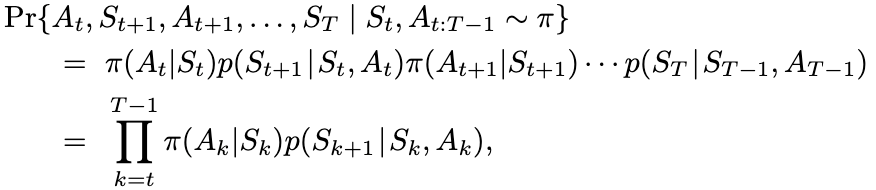
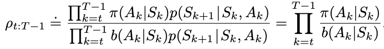

Preface
We start our coursera Sample-based Learning Methods from now on. And in this period, I will still excerpt some sentences from Sutton's book. But this time, I will label my own comprehension red.
ReinforcementLearning-Principle-Day6: Monte-Carlo
Introduction
Monte Carlo methods are ways of solving the reinforcement learning problem based on averaging sample returns. The term “Monte Carlo” is often used more broadly for any estimation method whose operation involves a significant random component.
Monte Carlo methods sample and average returns for each state–action pair much like the bandit methods we explored in Chapter 2 sample and average rewards for each action. The main di↵erence is that now there are multiple states, each acting like a different bandit problem (like an associative-search or contextual bandit) and the different bandit problems are interrelated. That is, the return after taking an action in one state depends on the actions taken in later states in the same episode. Because all the action selections are undergoing learning, the problem becomes nonstationary from the point of view of the earlier state.
Each of these ideas taken from DP is extended to the Monte Carlo case in which only sample experience is available.
5.1 Monte Carlo Prediction
The first-visit MC method estimates as the average of the returns following first visits to s, whereas the every-visit MC method averages the returns following all visits to s.
What is his probability of terminating with a reward of +1 as a function of the dealer’s showing card? All of the probabilities must be computed before DP can be applied, and such computations are often complex and error-prone.
5.2 Monte Carlo Estimation of Action Values
If a model is not available, then it is particularly useful to estimate action values (the values of state–action pairs). And the process is the same GPI. generalized policy iteration.
5.3 Monte Carlo Control
We made two unlikely assumptions above in order to easily obtain this guarantee of convergence for the Monte Carlo method. One was that the episodes have exploring starts, and the other was that policy evaluation could be done with an infinite number of episodes.
The pseudocode for Monte Carlo ES is ineffcient because, for each state– action pair, it maintains a list of all returns and repeatedly calculates their mean. It would be more e�cient to use techniques similar to those explained in Section 2.4 to maintain just the mean and a count (for each state–action pair) and update them incrementally.
Convergence to this optimal fixed point seems inevitable as the changes to the action-value function decrease over time, but has not yet been formally proved
5.4 Monte Carlo Control without Exploring Starts
here are two approaches to ensuring this, resulting in what we call on-policy methods and on-policy methods.
- On-policy methods attempt to evaluate or improve the policy that is used to make decisions
- whereas off-policy methods evaluate or improve a policy di↵erent from that used to generate the data.
Off-policy means we use a policy to generate data and finaly evaluate policy in the end.
In on-policy control methods the policy is generally soft, meaning that for all and all , but gradually shifted closer and closer to a deterministic optimal policy.
The policies are examples of policies
In my opinion, we use montecarlo average first MC control, and for the policy, we will use 1 - epsilon + epsilon / |A| for the maximum return (computed by MC).
is assured by the policy improvement theorem. Let be the -greedy policy.
5.5 Off-policy Prediction via Importance Sampling
one that is learned about and that becomes the optimal policy, and one that is more exploratory and is used to generate behavior. The policy being learned about is called the target policy, and the policy used to generate behavior is called the behavior policy.
That is, we require that > 0 implies > 0. This is called the assumption of coverage.
Almost all o↵-policy methods utilize importance sampling, a general technique for estimating expected values under one distribution given samples from another
We apply importance sampling to o↵-policy learning by weighting returns according to the relative probability of their trajectories occurring under the target and behavior policies
called the importance-sampling ratio. Given a starting state St, the probability of the subsequent state–action trajectory, , occurring under any policy is

where p here is the state-transition probability function defined by (3.4). Thus, the relative probability of the trajectory under the target and behavior policies (the importance- sampling ratio) is

This is where importance sampling comes in. The ratio ⇢t:T �1 transforms the returns to have the right expected value:
When importance sampling is done as a simple average in this way it is called ordinary importance sampling.
Formally, the difference between the first-visit methods of the two kinds of importance sampling is expressed in their biases and variances. Ordinary importance sampling is unbiased whereas weighted importance sampling is biased (though the bias converges asymptotically to zero). On the other hand, the variance of ordinary importance sampling is in general unbounded because the variance of the ratios can be unbounded, whereas in the weighted estimator the largest weight on any single return is one. In fact, assuming bounded returns, the variance of the weighted importance-sampling estimator converges to zero even if the variance of the ratios themselves is infinite (Precup, Sutton, and Dasgupta 2001).
A/A's variance -> 0 when A->
In practice, the weighted estimator usually has dramatically lower variance and is strongly preferred. Nevertheless, we will not totally abandon ordinary importance sampling as it is easier to extend to the approximate methods using function approximation that we explore in the second part of this book.
the example 5.5 is intetresting. It use a small example and mathematics formula to tell us why ordinary importance sampling is infinite